Bir Karenin B Kareye Geçişi
Royal Match
Kazanma Ekranının Beş Adımı
Board üstünde oynayan tek bir katman değil: sırayla açılan, her biri kendi süresine sahip beş ayrı animasyon parçası.
Tahta kararır, üstüne bir kurdele açılır.
"ROYAL MATCH!" yazısı tek seferde belirmiyor: harf öbekleri halinde aşamalı yazılıyor, R → RO → ROYA → ROYAL MATCH!
Kurdele ve borazan çerçevesi oturur, borazanlar konfeti fırlatır.
Bağımsız bir havai fişek parçacık sistemi devreye giriyor, konfetiden ayrı ve kendi zamanlamasıyla.
Her şey sönümlenir, tahta geri döner.
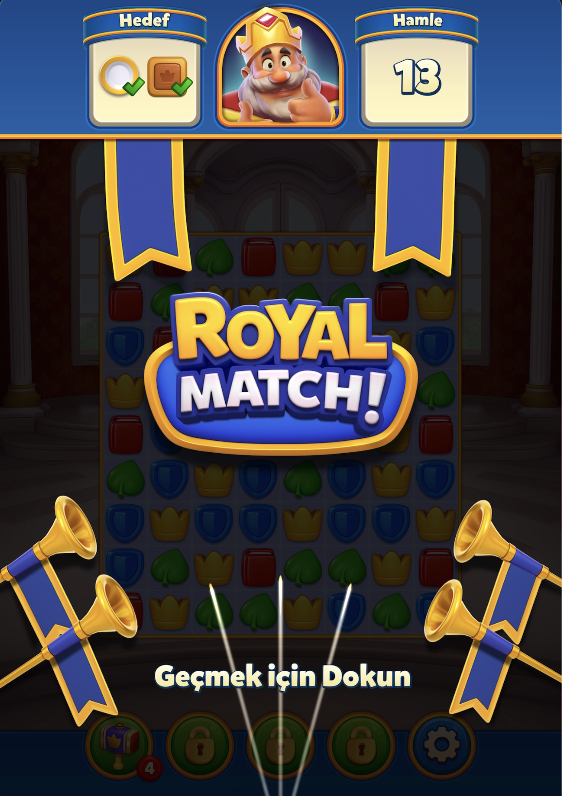
HUD ve Girdi Zamanlaması
Kademeli azalma yok: sayaç girdi anında direkt yeni değere atlıyor (24→23 arası ara değer gösterilmiyor). Bu değişim, o hamlenin görsel sonucu (ör. engel kırılması) ekranda oynamaya başlamadan önce gerçekleşiyor: girdi kabul, sayaç anında güncellenir, sonuç animasyonu oynar.
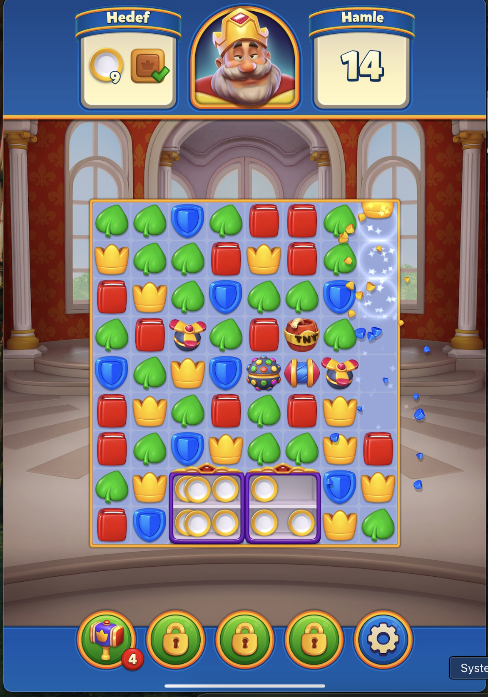
Bir hamlenin animasyonu tamamlanmadan sıradaki hamle yapılabiliyor; kuyruğa alınan hamlenin animasyonu, oynanmakta olan animasyon bitince başlıyor. Board hiçbir zaman girdiye kapanmıyor, bu da oyunu belirgin biçimde akıcı hissettiriyor.
Kazanma anında hedefler tamamlandıktan hemen sonra HUD'daki "Hedef" etiketi "Ödül"e dönüşüyor ve üç adımlı bir sekans başlıyor. (1) Kalan her "Hamle" birimi tek tek, yukarı doğru bir ışın efektiyle fırlayıp ödül sayacına ekleniyor, sayaç adım adım azalıyor. (2) Board'da o ana kadar biriken, henüz ateşlenmemiş power-up'lar (TNT, roket) kendiliğinden art arda patlamaya başlıyor. (3) Bu patlamalarla temizlenen hücreler tek tek altın paraya dönüşüp ekranı dolduran büyük bir altın sağanağı halinde ödül kutusuna akıyor.
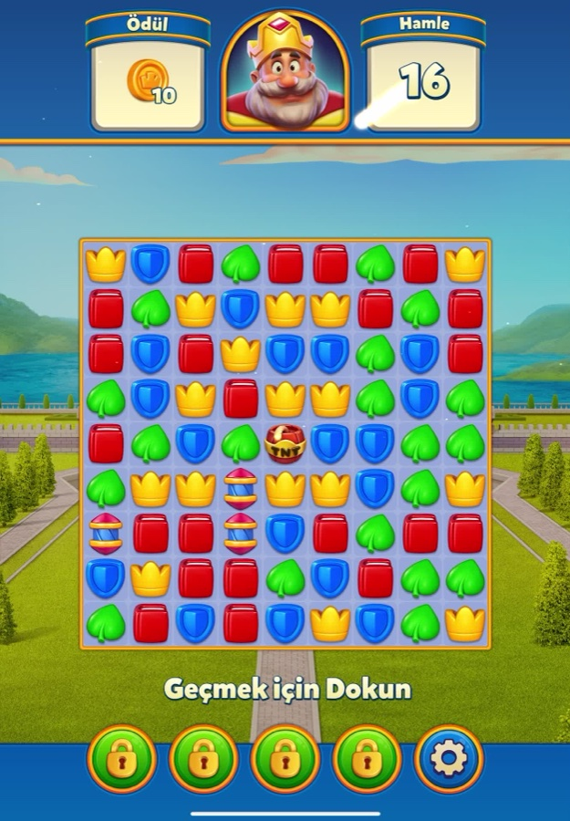
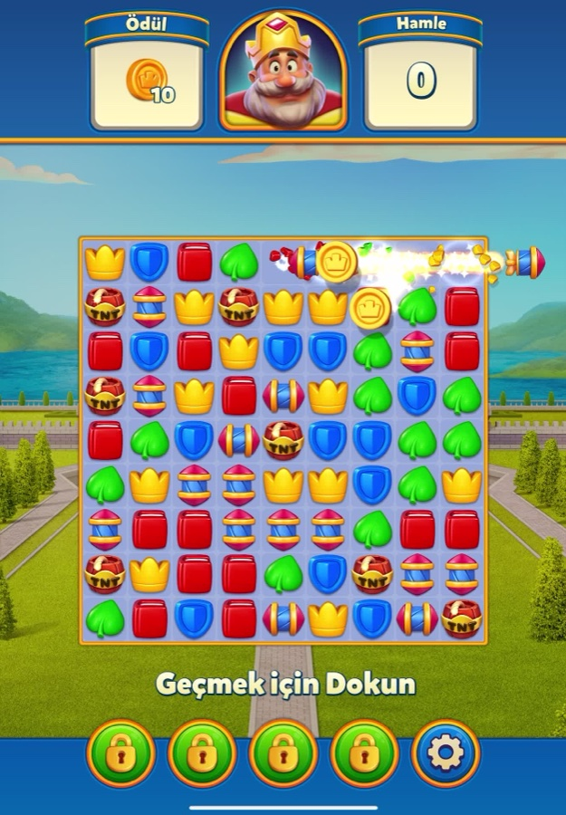
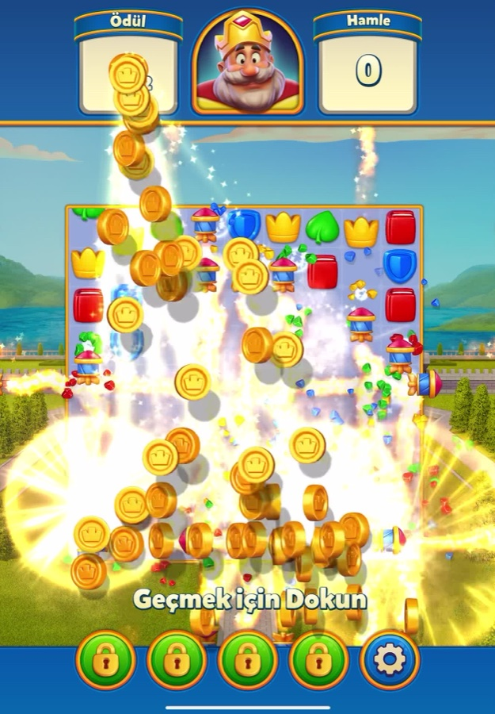
Seviye sonundaki geçiş animasyonu dokunarak atlanabiliyor, Toon Blast'la aynı davranış. Fark davranışta değil, iletişimde: Toon Blast bunu ekranda "Geçmek İçin Dokun" yazısıyla açıkça bildirirken, Royal Match aynı imkânı hiçbir yazıyla söylemiyor, oyuncu kendi keşfetmek zorunda.
Toon Blast'ta karşılığı olmayan bir özellik: bir süre dokunmadan beklendiğinde board'da geçerli bir eşleşme ipucu olarak vurgulanıyor. Örnekteki karede sol üstteki iki yaprak ikonu diğerlerinden daha parlak gösteriliyor ve eşleşmeyi tamamlayacak konuma doğru hafifçe hareket ediyor. Royal Match'in "hamle önerisi" dediğimiz bu davranış, önceki oturumlarda net doğrulanamamıştı, artık gerçek kareyle kesinleşti.
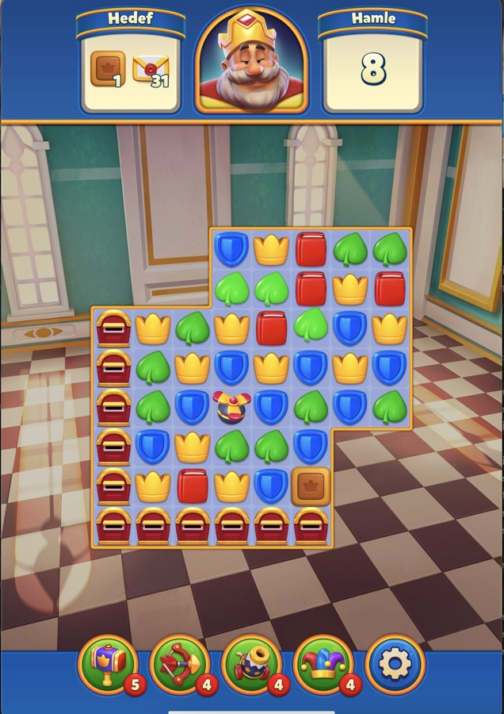
Kaybetme Akışı
Sayaç 0'a düşer, ama son hamlenin kademe animasyonları ~5sn boyunca oynamaya devam eder (Bölüm 2'deki kuyruk davranışıyla tutarlı).
"Hamlen Kalmadı!" yazılı bir şerit ekranı yatay geçer.
Ücretli "Devam Et?" modalı çıkar: "+5 hamle" rozeti, "Devam etmek için 5 hamle daha alın!" metni, 900 elmas karşılığı bir buton.
Statik "Bölüm Başarısız!" ekranına geçilir: kırık kalp ikonu, hedeflerin tek tek yeşil tik/kırmızı çarpı ile durumu, "Güçlendirici Seç:" başlığıyla 3 power-up'tan biri seçilip bir sonraki denemeye taşınabiliyor, "Tekrar Dene" butonu.
Üç bağımsız örnekte de akış birebir aynı. Toon Blast'ın kendi başarısızlık ekranıyla (bkz. Toon Blast §15) neredeyse birebir aynı yapı: kırık kalp + booster seçimi + Tekrar Dene.
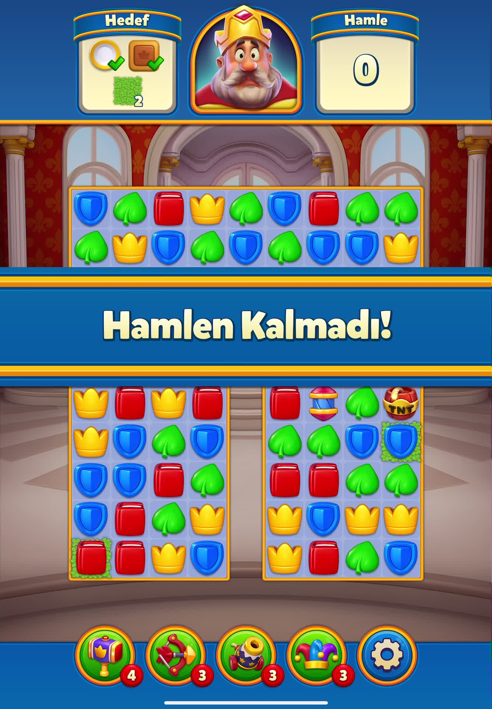
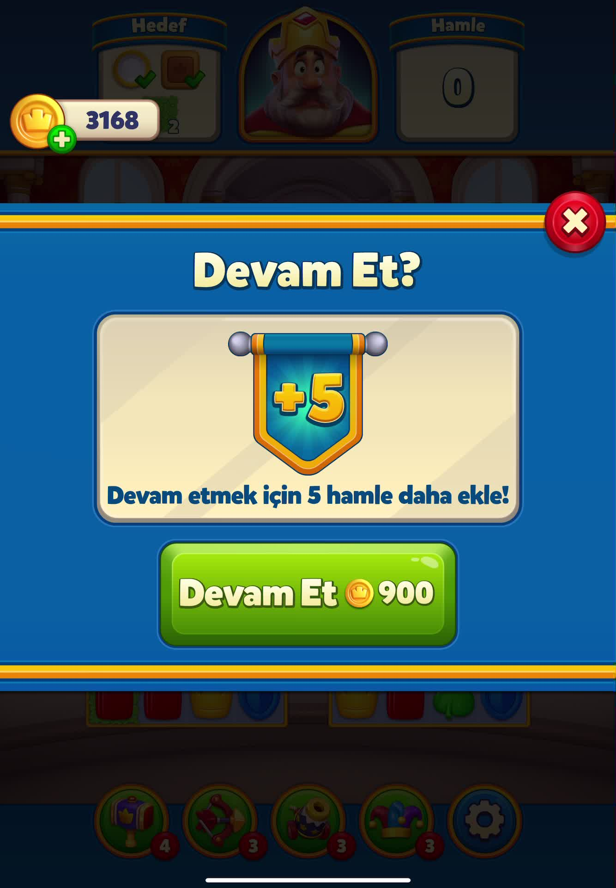
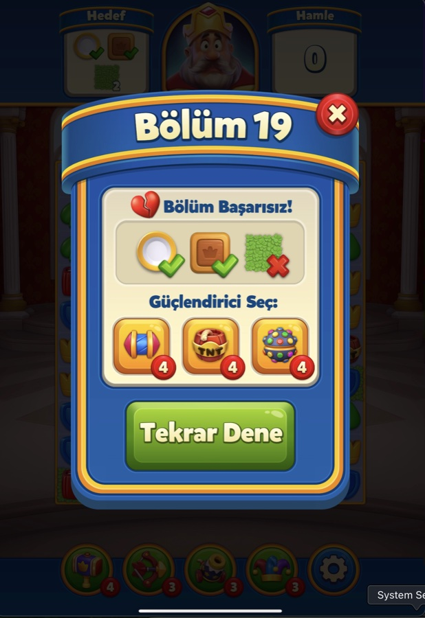
Dekorasyon Açılışı
Taht Odası, kazanılan coin karşılığında parça parça dekore ediliyor: taht, vitray pencereler, sancaklar ayrı ayrı satın alınıyor. Her yeni parça, savaş efektlerinden tamamen farklı bir dille ortaya çıkıyor: nesnenin duracağı noktadan yukarı doğru fışkıran ince, beyaz bir ışık huzmesi belirip birkaç saniye parlıyor, sonra nesne yerinde beliriyor.
Bu bir kombo patlaması ya da bir kazanma efekti değil, sakin ve "ödül açılışı" hissi veren ayrı bir görsel kategori. Kaynağı coin harcamaya dayalı bir meta ilerleme sistemi olduğu için sistemin kendisi burada incelenmedi.
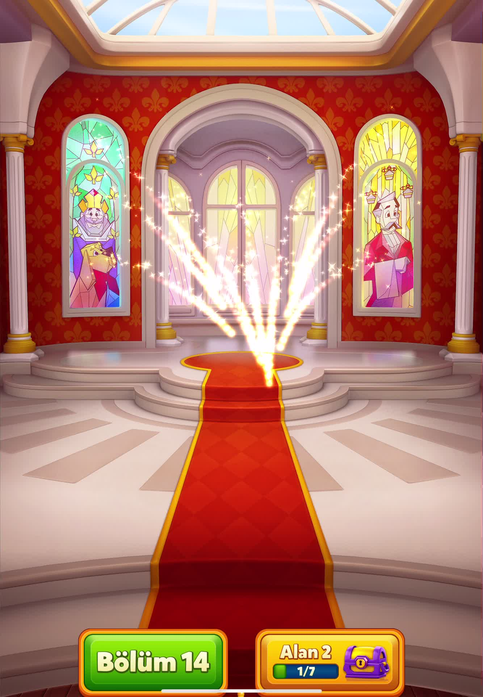
Alan Kutlaması: Kesmeli Bir İnşa Slaytı
Bir "Alan" (bir grup seviye) tamamlandığında ayrı bir kutlama devreye giriyor: "Alan Tamamlandı!" banner'ı borazan ve altın/mavi konfetiyle açılıyor, King Robert karanlık kalenin önünde yumruklarını sıkıp havai fişeklerle poz veriyor.
Ardından ekran gündüze kesiyor ve oyuncunun o ana kadar açtığı tüm inşa aşamaları art arda, sert kesmelerle tekrar oynatılıyor: önce çıplak çim ve göl, sonra sade bir kale ve fıskiye, sonra çalı labirenti ve akan su, ve böyle devam ederek en son ulaşılan hale kadar. Bölüm 4'teki tam dekore Kale & Bahçe görseli, bu slaytın vardığı son durak.
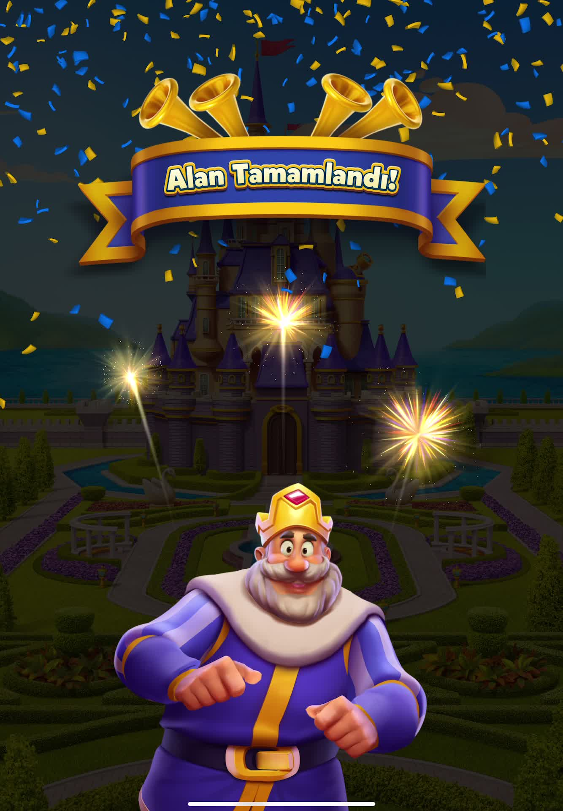
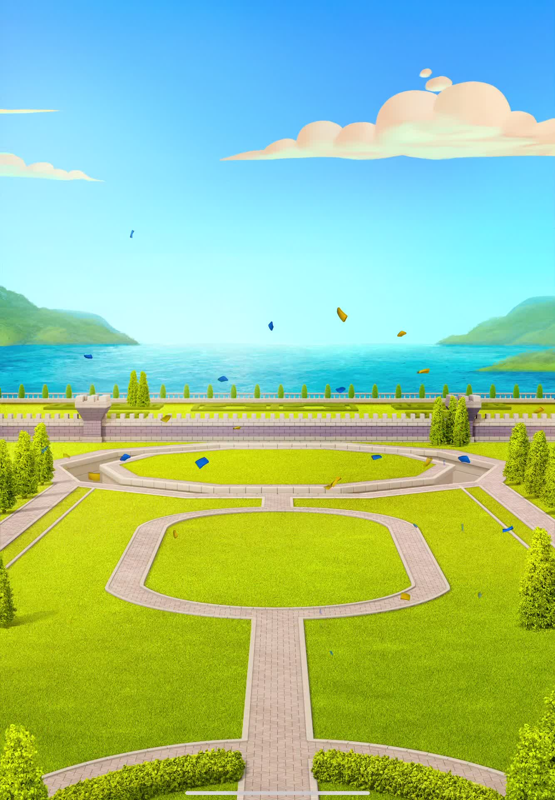
Yıldız Ekonomisi: Bölüm Ödülünden Kale İnşasına
Alan Kutlaması'nın (Bölüm 5) beslendiği kaynak burada ortaya çıkıyor: bir "Bölüm" bitince kazanılan Yıldız, altın'dan tamamen ayrı ikinci bir para birimi olarak Kale'nin inşa aşamalarını satın almakta kullanılıyor.
Bir "Bölüm" tamamlandığında kırmızı kadife bir yastık üzerinde parlayan tek bir altın yıldız beliriyor, "Tebrikler!" yazısıyla birlikte. Roket/TNT/Lightball'ın ani patlama diliyle hiç ilgisi yok, sakin ve törensel bir "ödül sunumu" hissi var.
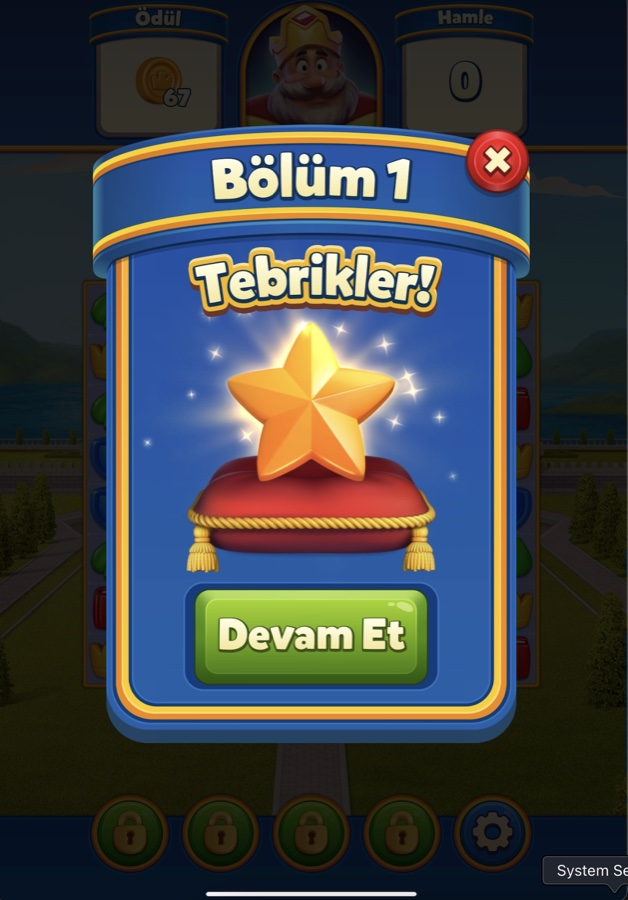
Harita ekranına dönüldüğünde yıldız gökten süzülüp aynı noktaya iniyor, HUD'daki yıldız sayacı artıyor; hemen ardından ayrı bir altın kazanç animasyonu ("+67") aynı konumda beliriyor. Aynı ana denk gelseler de görsel olarak birbirinden bağımsız iki ayrı ödül akışı, tek bir "kazanç" animasyonuna birleştirilmemiş.
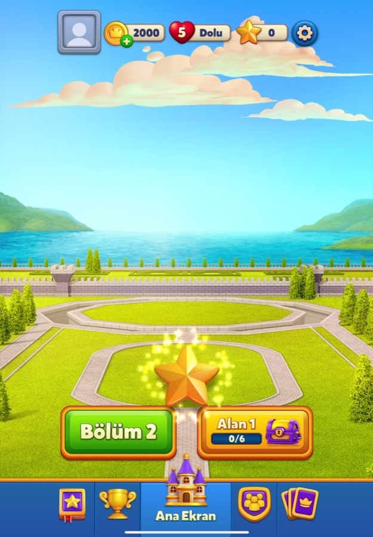
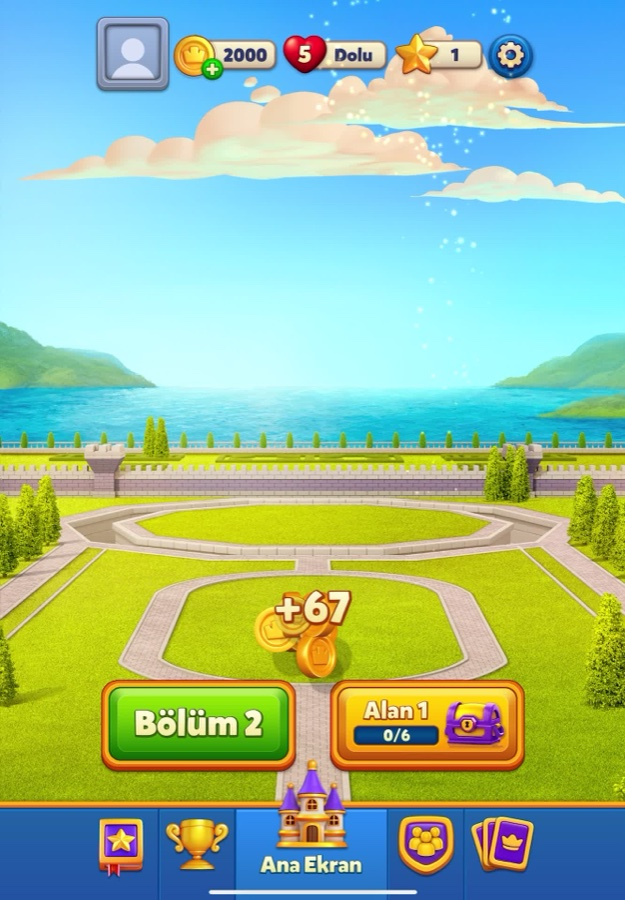
"Kale" panelinde "Kaleyi inşa et" satırı, maliyeti bir yıldız ikonuyla gösteriyor; buton yanındaki altın ok sürekli yukarı zıplayarak dikkat çekiyor. Royal Match'in genelinde gördüğümüz "buraya dokun" vurgu dilinin (yeni seviye butonundaki kıvılcım gibi) bir başka örneği.
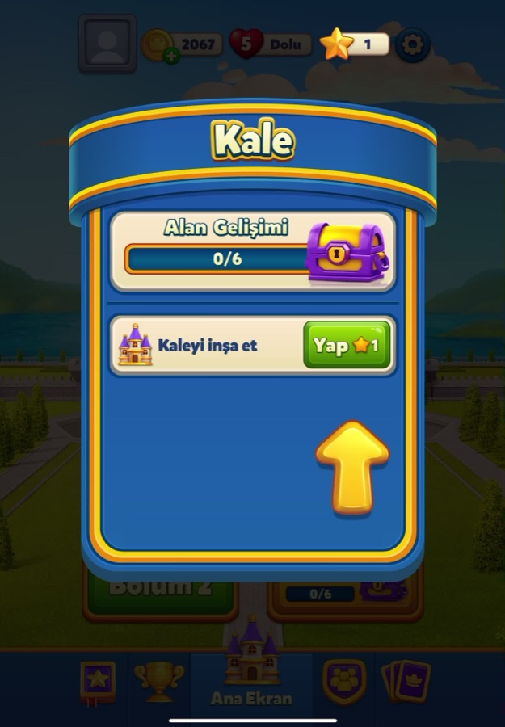
Yıldız harcanınca inşaat alanından toz/döküntü bulutu yükseliyor, ardından kamera yakınlaşıp tamamlanmış kaleyi kutluyor, son olarak geniş açıya dönülüyor: kale artık yerinde duruyor ve "Alan" ilerleme çubuğu bir birim artmış (0/6 → 1/6). Bu üç kare, Bölüm 5'teki kesmeli inşa slaydının besleneceği ham malzeme.
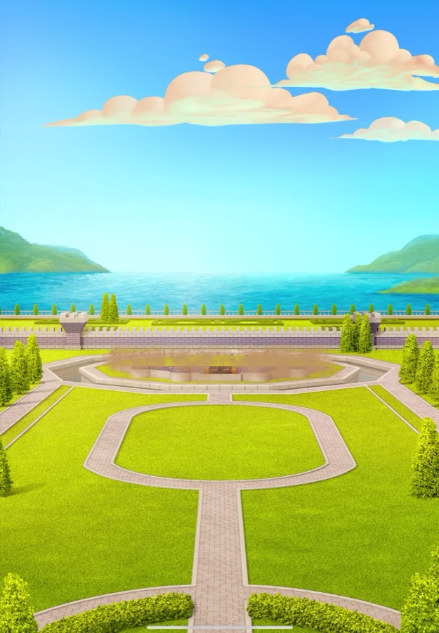
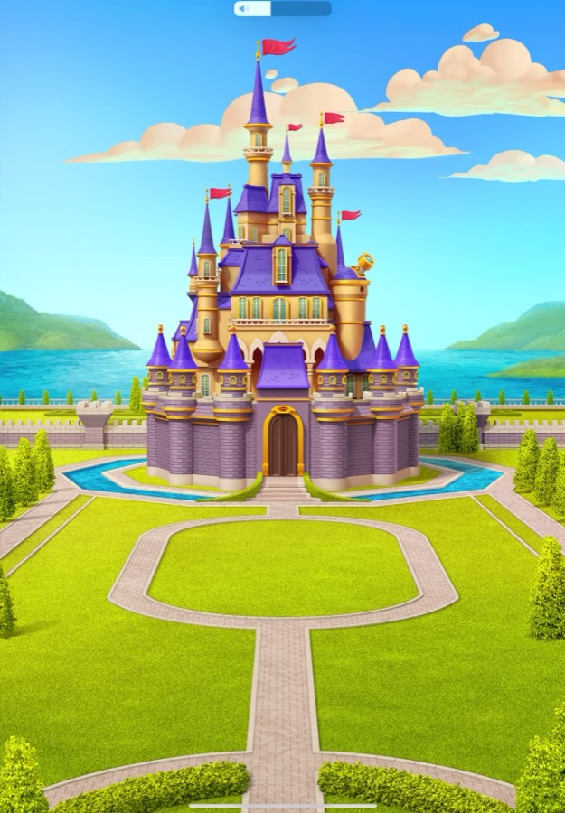
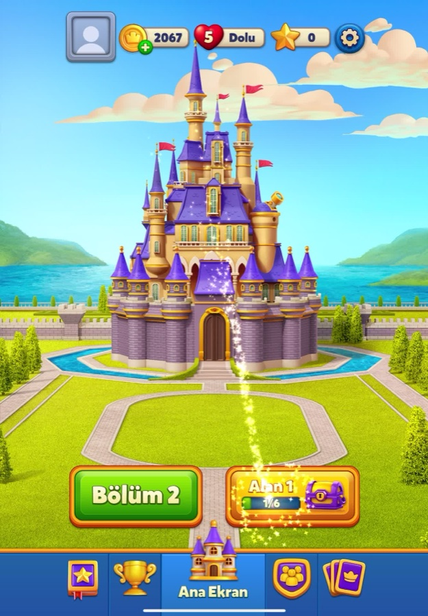
Atölye Araçlarının Aktivasyonu
Standart 4 power-up'tan (Roket/TNT/Lightball/Pervane) ayrı, sadece belirli seviyelerde beliren "atölye" araçlarının her biri kendi aktivasyon animasyonu kullanıyor.
Seçilen satırın kenarından ince, hızlı bir ok uçuyor; geçtiği her objeyi ahşap ve altın renkli döküntüye çeviriyor, ardında kısa bir ışın izi bırakıyor.
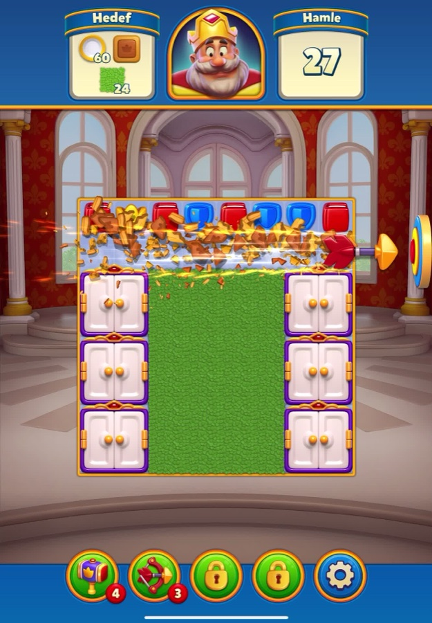
Küçük bir gülle, arkasında alev ve kıvılcım izi bırakarak seçilen sütun boyunca aşağıdan yukarı uçuyor, önüne çıkan objeleri parçalıyor. Ok'a göre daha "ağır ve fiziksel" bir uçuş hissi var.
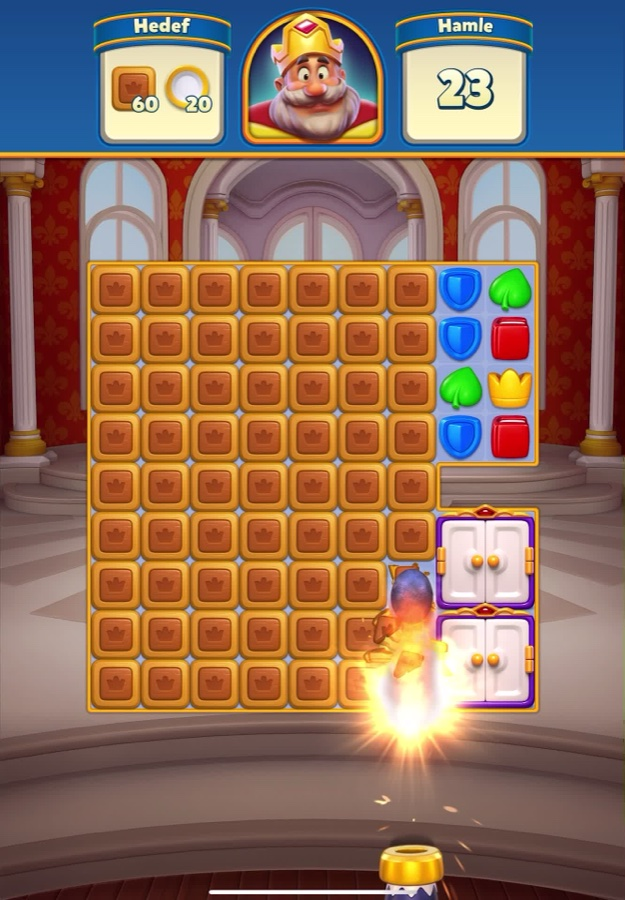
Bir yok etme animasyonu değil: dev bir soytarı şapkası ekranın kenarından içeri kayıyor, tahtadaki tüm objelerin yerini karıştırıyor. Diğer üç aracın "isabet" temalı dilinden tamamen ayrı, tek başına bir "karıştırma" görseli.
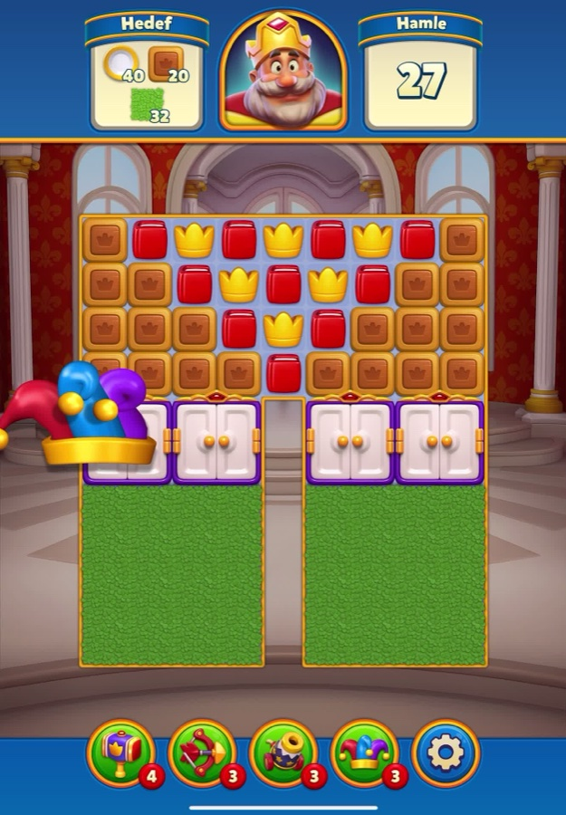
Diğer üç aracın alan-etkili diline karşı en doğrudan/fiziksel olanı: oyuncu önce aracı seçiyor, sonra hedef objeye dokunuyor; büyük bir çekiç yukarıdan aşağı iniyor ve tek bir hücreye tam isabetle vuruyor, ahşap döküntü ve parlak bir flaşla obje anında yok oluyor. Ok/Top/Soytarı Şapkası kendiliğinden geniş bir alanı etkilerken, Çekiç oyuncunun elle seçtiği tek bir hedefe odaklanan tek araç.
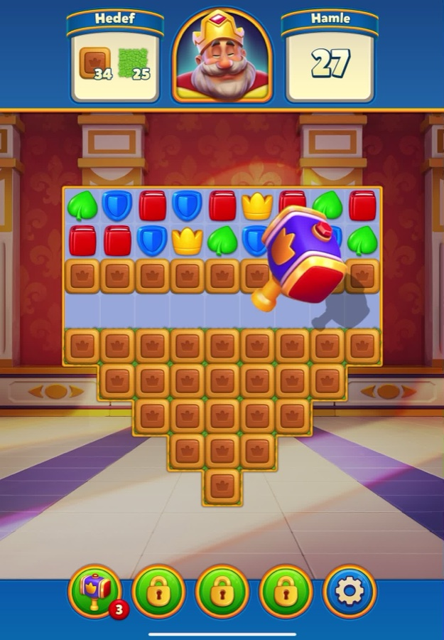
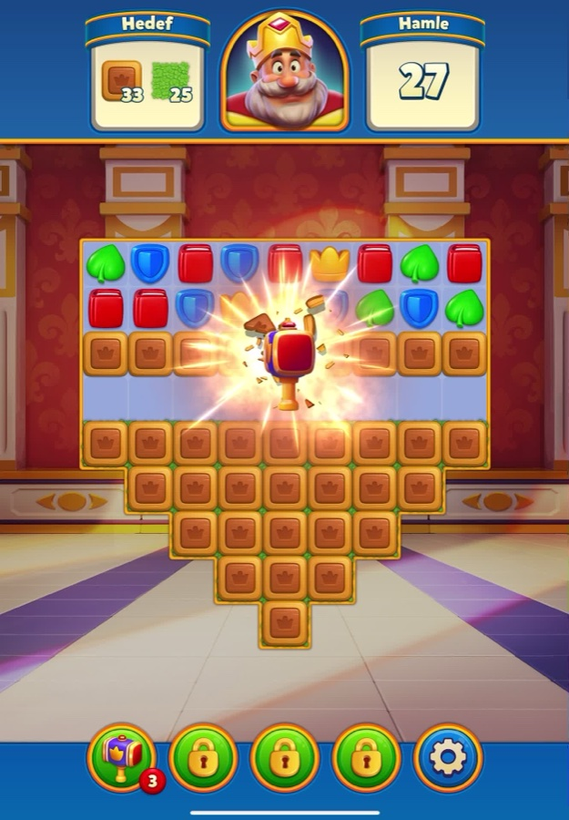
Mini Oyun: Mutfak Kurtarması
Standart seviyelerden tamamen ayrı bir mod: board H harfi şeklinde, "Hedef" kutusu yok, sadece "Hamle" sayacı ve bir çıkış (X) butonu var. Sahne de farklı: kral'ın alev almış bir mutfağı, board'un iki üst köşesine yerleşmiş birer vana/boru ile çerçeveleniyor.
Oyuncu eşleştirme yaptıkça hücreler tek tek mavi/su dokusu kazanıyor; henüz eşleşmemiş hücreler kuru ahşap renginde kalıyor. Board bu yüzden bir ilerleme çubuğu gibi de okunabiliyor: ne kadarı maviye döndüyse mini oyunda o kadar yol alınmış.

Board mavileştikçe arka plandaki vanadan çıkan su fışkırma efekti büyüyor, alevli mutfağı söndürmeye başlıyor. Board üzerindeki soyut ilerleme, sahnede somut bir "yangın söndürme" anlatısına dönüşüyor. Dekorasyon Açılışı ve Alan Kutlaması'ndan farklı bir örnek, çünkü burada bağlantı seviye sonunda değil, oyun sırasında sürekli güncelleniyor.

Mini Oyun: Ejderha Kapanı
Mutfak Kurtarması'ndan (Bölüm 8) tamamen ayrı, üçüncü bir mini oyun modu daha var: karanlık bir zindan, kralı parmaklıkların arkasına sıkıştırmış kızıl bir ejderha. HUD da farklı bir dil kullanıyor: "Hamle" yerine geri sayan bir süre, "Hedef" yerine bir anahtar ikonuyla ilerleme çubuğu (ör. 43/65).
Ejderha solda, kral sağda parmaklıklara yaslanmış duruyor; oyuncu eşleştirdikçe anahtar sayacı yükseliyor. Diğer iki mini oyundan (Kale inşası, Mutfak) farklı olarak burada zaman baskısı ana gerilim kaynağı.

Süre azalırken ejderha zaman zaman kralın üstüne doğrudan bir ateş huzmesi püskürtüyor. Board'u veya ilerlemeyi doğrudan etkilediğine dair bir işaret yok, sahnede periyodik bir tehdit/baskı anı olarak duruyor.
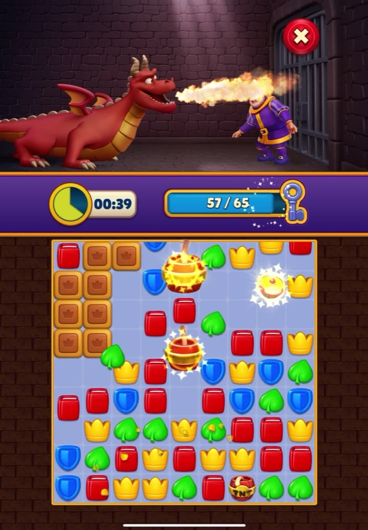
Süre 10 saniyenin altına inince saat ikonu siyaha/kırmızıya dönüyor, ekranın tamamını çevreleyen kırmızı bir vinyet beliriyor, bir siren sesi çalıyor ve ekran hafifçe titriyor (ses/titreşim video karesinden değil, oyuncunun kendi deneyiminden). Royal Match'in normal oynanışında hiç kullanılmayan ekran sarsıntısı, oyuncunun teyidine göre sadece mini oyunlarda devreye giriyor, bu mini oyuna özel bir "acil durum" görsel dili.
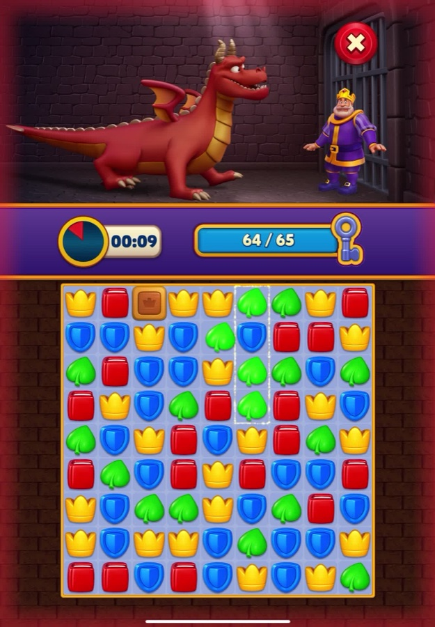
Toon Blast
Board Kilitleniyor: Kademe Kuyruğu Yok
Royal Match'te bir hamlenin animasyonu bitmeden sıradaki hamle sıraya alınabiliyordu, board hiç kapanmıyordu. Toon Blast'ta tam tersi: bir hamlenin patlama/düşme animasyonu tamamlanana kadar board geçici olarak kilitleniyor, sıradaki dokunuş kabul edilmiyor.
Power-up'ın İki Aşamalı Doğuşu
Bir grup eşiğe ulaştığında power-up'ın ortaya çıkışı tek bir anlık olay değil, iki ayrı adım halinde oynuyor.
Eşiğe ulaşan gruptaki tüm hücreler, kendi rengini koruyarak oluşacak power-up'ın dokusunu üstlerine alıyor: roket için küçük bir roket ikonu, bomba için yıldız/patlama deseni, disco ball için küre/ağ deseni. Oyuncu grubu elle saymak zorunda kalmıyor, dokuya bakması yetiyor.
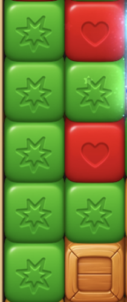
Desen belirdikten sonra, hücreler power-up ikonuna dönüşmeden hemen önce kısa bir beyaz glow ile işaretleniyor. Dönüşüm anlık değil, gözle takip edilebilen ayrı bir vurgulama adımı var.
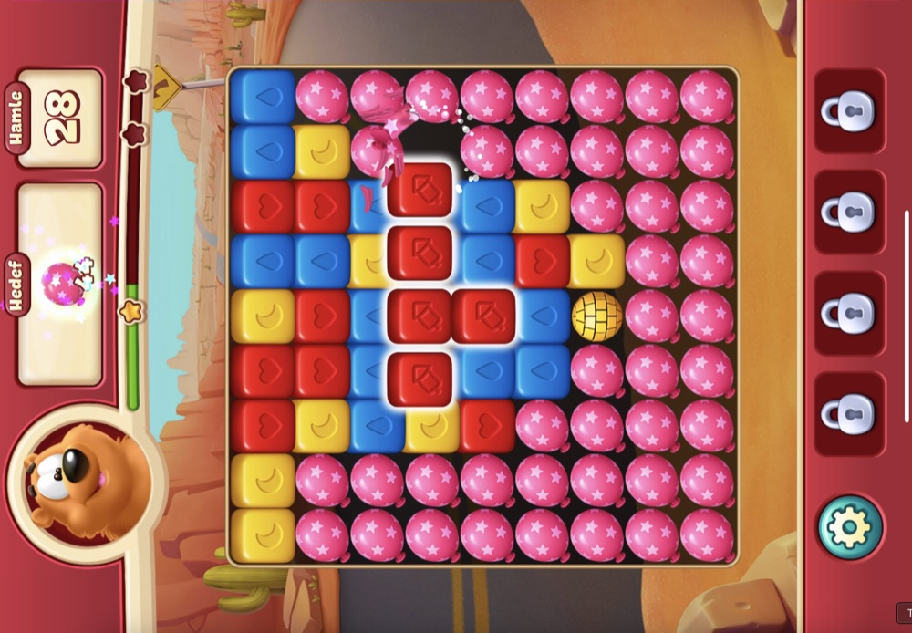
Geri Bildirim: Yıldız Çubuğu ve İpuçları
Her başarılı patlama çubuğu bir miktar dolduruyor (grup patlatma ya da power-up tetikleme fark etmiyor). Aşağıdaki iki kare aynı seviyeden: solda henüz boş, sağda ilk yıldıza ulaşılmış hâli. Tam matematiksel oranı (kaç patlama = ne kadar dolum) çıkarmaya çalışmadık, çubuğun dolma davranışı bu iki kareden zaten okunuyor.
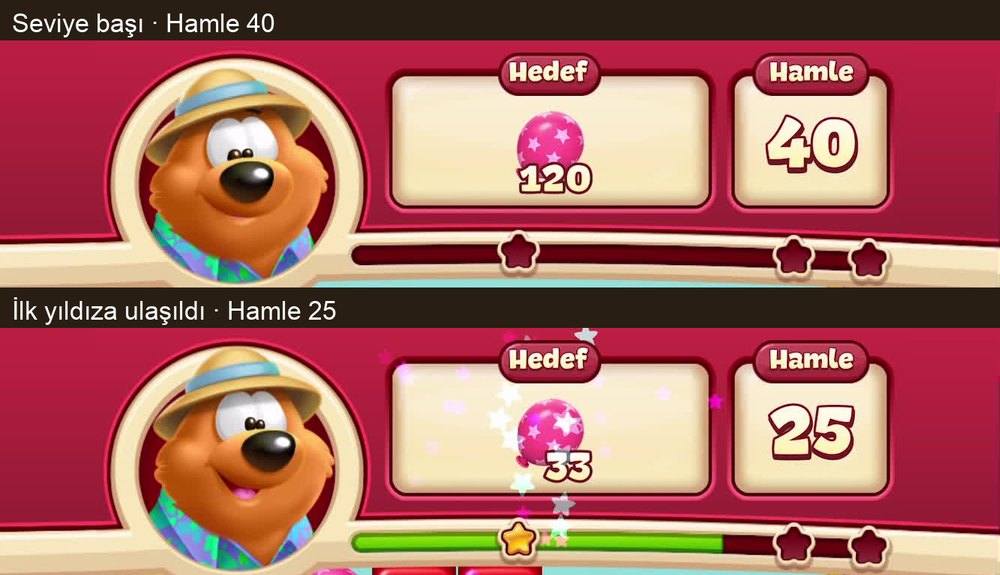
Royal Match'teki "hamle önerisi parlaması"nın bir karşılığı Toon Blast'ta yok. Bir süre dokunmadan beklendiğinde tahtada herhangi bir ipucu belirmiyor.
Ana menüde henüz oynanmamış, yeni açılan seviye butonu sürekli döngüsel bir altın kıvılcım animasyonuyla vurgulanıyor, çevresindeki yıldız desenleri de aynı ritimde parlıyor.
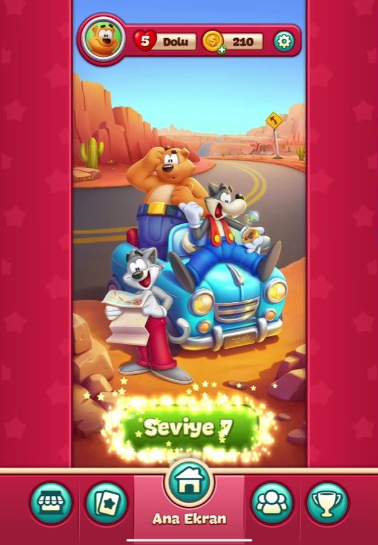
Kazanma Akışı: Banner, Atlama Seçeneği, Balon Patlaması
Board arkada tam görünür kalırken üstüne yarı saydam dairesel bir logo kartı biniyor. Royal Match'in kararan tahtasından farklı: burada board hiç kararmıyor, oyun tahtasının üstünden geçen bir katman gibi çalışıyor. Hedef'te yeşil tik beliriyor, kalan hamle sayısı sıfır olmak zorunda değil.
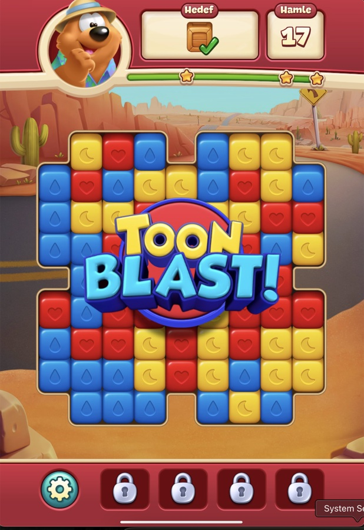
Son hamlede hedef tamamlanınca ve tahtada biriken roket zinciri (10+ roket birikebiliyor) patlamaya başlayınca bu yazı beliriyor: oyuncu isterse zinciri atlayabiliyor, isterse izleyebiliyor, zorunlu bir duraklama değil, tercih. Royal Match'te de aynı davranış (dokunarak atlama) mümkün, ama ekranda bunu söyleyen bir yazı yok, fark davranışta değil, bu imkânı oyuncuya açıkça bildirip bildirmemekte.
Her balon kendi başına, ayrı bir beyaz dairesel "pat" flaşı üretiyor; flaşın ardından konfeti parçacığı ve pembe kurdele döküntüsü saçılıyor, altındaki küp ortaya çıkıyor.
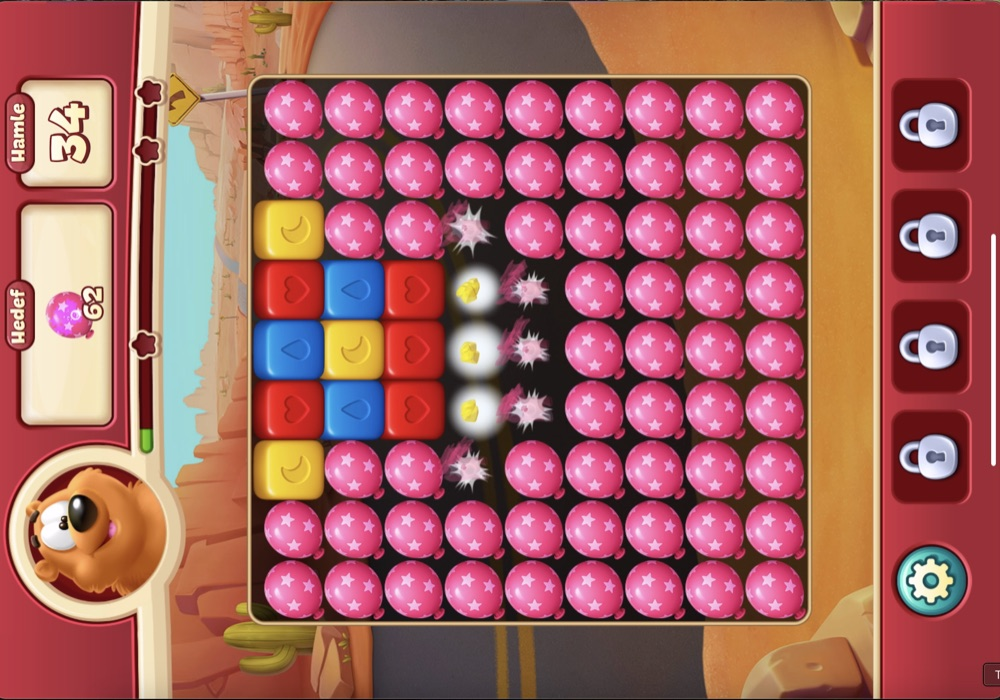
Seviye sonunda her zaman üç karakterin (Bruno Bear, Cooper Cat, Wally Wolf) hepsi birden zıplama animasyonu oynuyor, sayı seviyeden seviyeye değişmiyor.
Kaybetme Akışı
Teklif reddedilince gerçekten statik bir "Başarısız" ekranına geçiliyor, ve Toon Blast'ın kendi akışı Royal Match'ten iki noktada ayrışıyor.
Hamle sıfırlanınca ekrana "Hamle Kalmadı!" modalı geliyor: "+5" rozeti, izleyerek (reklam) veya 100 coin karşılığı devam etme seçeneği, altında ayrıca bir indirimli coin paketi reklamı ("%90 UCUZ, 250 coin, 29.99 TL") kayıyor içeri.
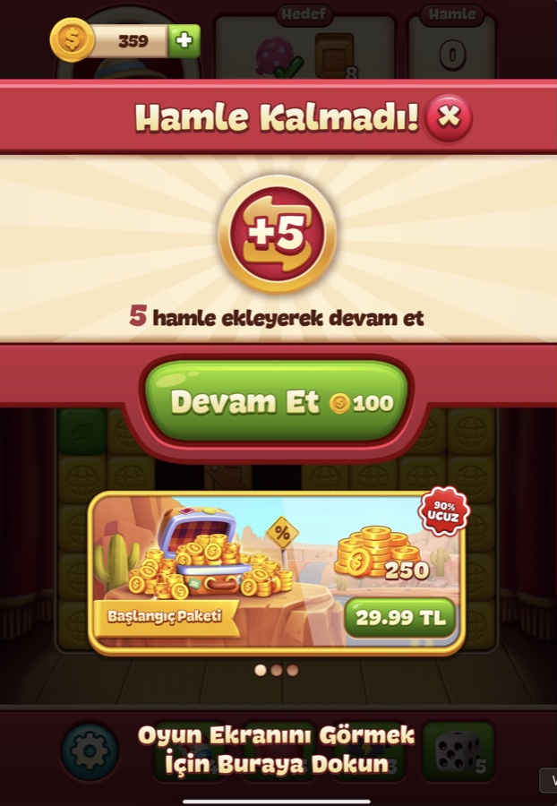
Bunun ardından ayrı bir modal daha çıkabiliyor: "Tacını ve Topladıklarını kaybedeceksin" uyarısı, taç ikonu + günlük seri sayacı ("2" günlük ateş rozeti) ile. Altında bir "Başlangıç Paketi" teklifi de var.
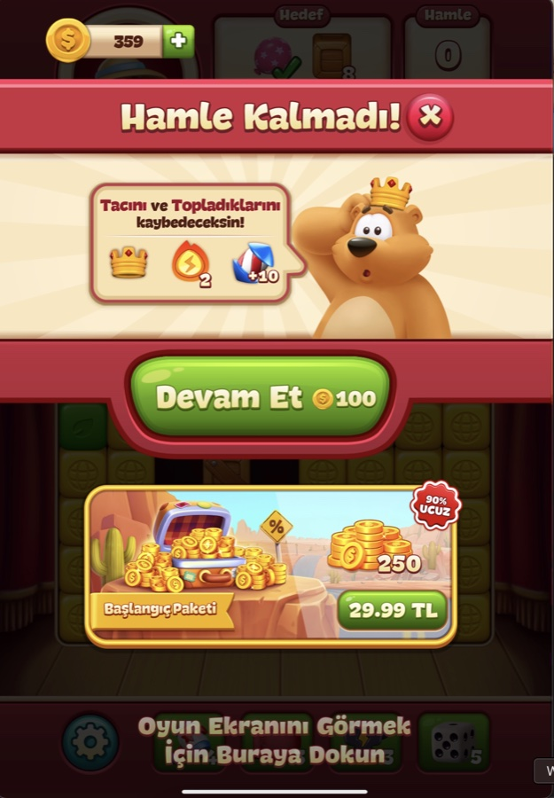
Teklifler reddedilince gerçekten statik bir başarısızlık ekranına düşülüyor: kırık kalp ikonu, "Takviye seç:" başlığı altında Roket/Bomba/Disco Ball'dan birini seçme seçeneği (bir sonraki denemeye götürülüyor), ve "Tekrar Dene" butonu. Altta ayrıca zamanlı bir "Taca Hücum!" etkinlik çubuğu (2/3) görünüyor. Royal Match'in kendi "Bölüm Başarısız!" ekranıyla neredeyse birebir aynı yapı.
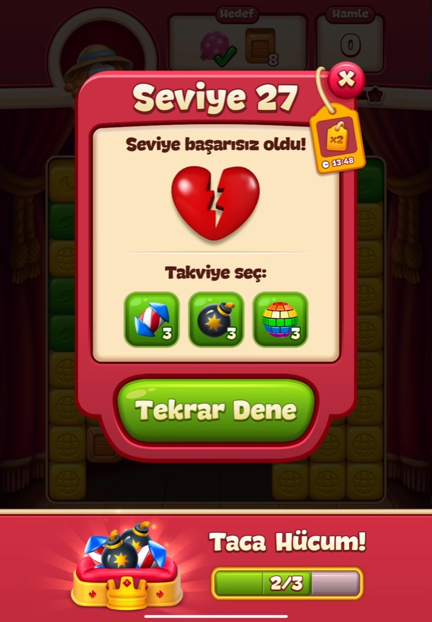
Mini Oyun: Dondan Kurtarma
Royal Match'in Mutfak Kurtarması'na (bkz. Royal Match §9) çok yakın bir karşılığı var: burada Bruno Bear, buzlu bir odada üşüyerek titriyor, yanındaki sobayı çalıştırmak oyuncunun eşleştirmesine bağlı.
Bruno'nun önündeki buzlu/camsı bir insan silüetinin içinden altın renkli bir boru hattı geçiyor. Oyuncu eşleştirdikçe boruda kızgın/erimiş bir sıvı yükselip yayılıyor, buzlu panel yavaşça temizleniyor. Royal Match'teki su dolan board yerine burada ısı dolan bir boru şebekesi var, aynı "ilerleme = sahnede görünür bir değişim" mantığı.

Isı borunun tamamını doldurunca buzlu panel tamamen saydamlaşıyor, Bruno'nun titremesi duruyor. Kullanıcı doğruladı: kurtarma tamamlanan o anda, aynı seviyenin ekranı ısınıyor (sonraki seviyeye ertelenmiyor).
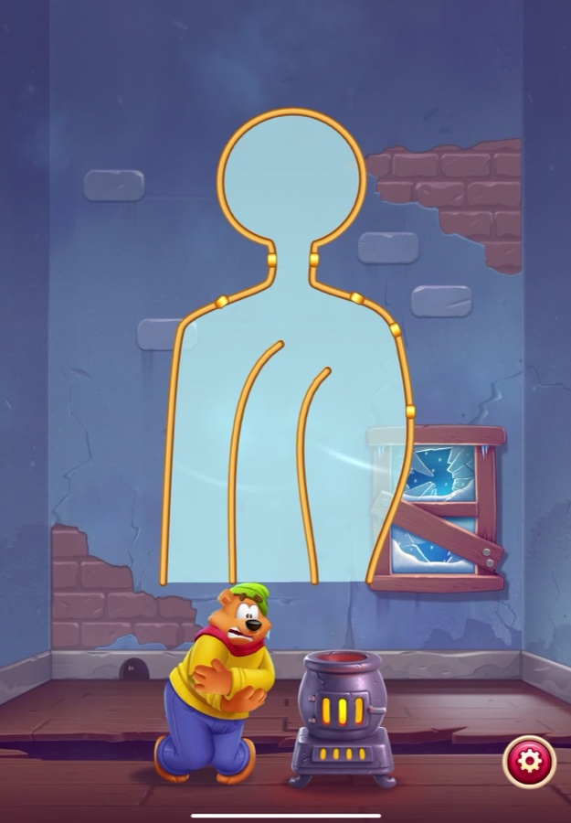
Bruno artık rahat, başparmaklarını kaldırmış gülümsüyor; "İşte ödülün: +5" coin ödülüyle ekran kapanıyor. Royal Match'in mini oyunlarındaki ayrı ödül dilinin (yıldız/coin) burada da bir karşılığı var.
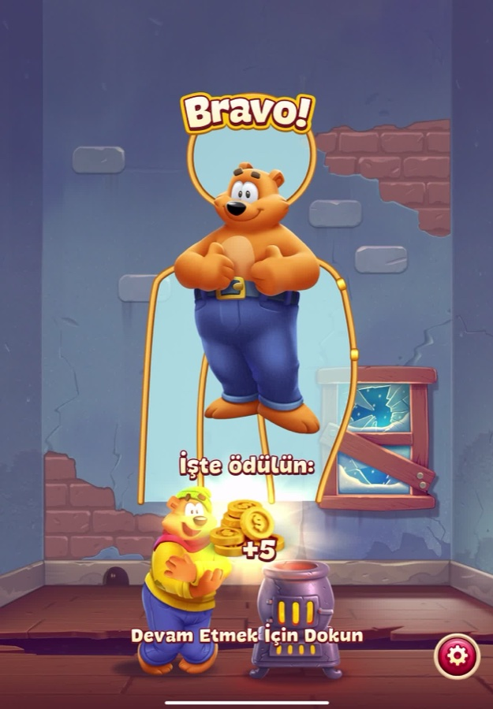
"Bravo!" ekranından ana haritaya dönülünce ödül orada bitmiyor: karakterlerin yanında yükselen bir "+5" rozeti beliriyor, ardından tek tek altın paralar dönerek yukarı doğru uçuyor, HUD'daki coin sayacına ulaşınca sayaç (burada 205→210) bir kıvılcım patlamasıyla güncelleniyor. Bu örnekte mini oyunun tamamen farklı, "acı biber" temalı bir varyantı var: Bruno bu sefer Dondan Kurtarma'daki buzdan değil, acı bir yemekten kurtarılıyor, sombrero+poncho kostümüyle Meksika temalı bir sahnede. Royal Match'in yıldız/altın ekleme sahnesine (bkz. Royal Match §7) yakın bir "ödül gerçek bir nesne olarak taşınıyor" mantığı.
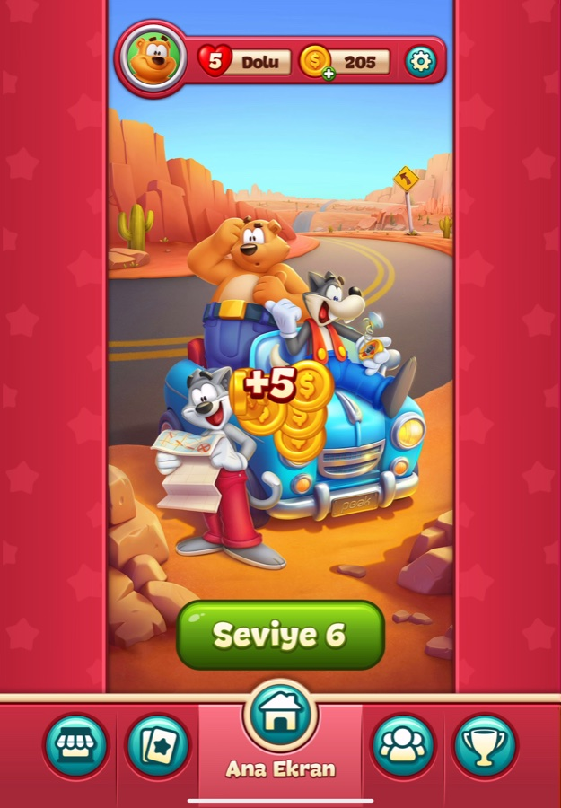
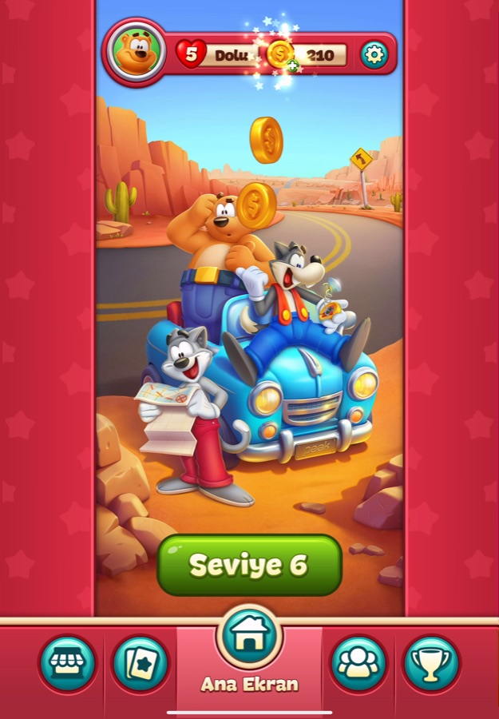
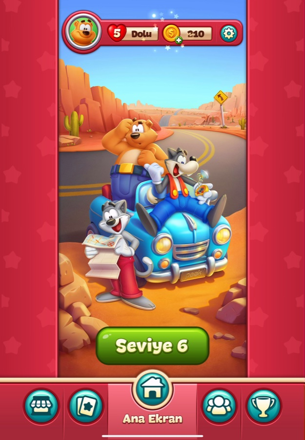
Araç Çubuğu: Çekiç, Örs, Boks Eldiveni, Zar
Royal Match'in atölye araçlarına (bkz. Royal Match §8) karşılık gelen bir satır burada da var: oyuncunun eşleştirmeden bağımsız, tek başına dokunarak kullandığı tekrar kullanılabilir araçlar. Dört tanesini bu turda inceledik.
Tutorial'da "ÇEKİÇ Takviyesini seçmek için dokun!" uyarısı, ardından "Balonu patlatmak için ona dokun!" ile hedef hücre seçtiriliyor. Çekiç sapı ekranın dışından girip hedef hücreye vuruyor, vuruş noktasında kısa bir beyaz flaş halkası açılıyor, isabet alan hücre ve komşuları yeni renklere dönüşüyor. Royal Match'in Çekici ile aynı temel dil (tek hücre hedefi + vuruş flaşı), ama Toon Blast'ta vuruş sonucu doğrudan bir renk dönüşümü/mini patlama gibi davranıyor.
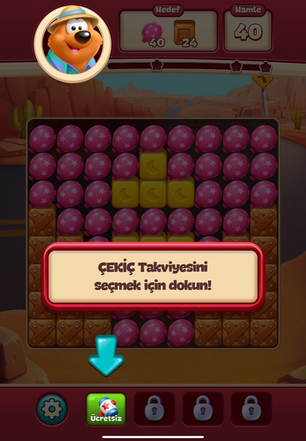
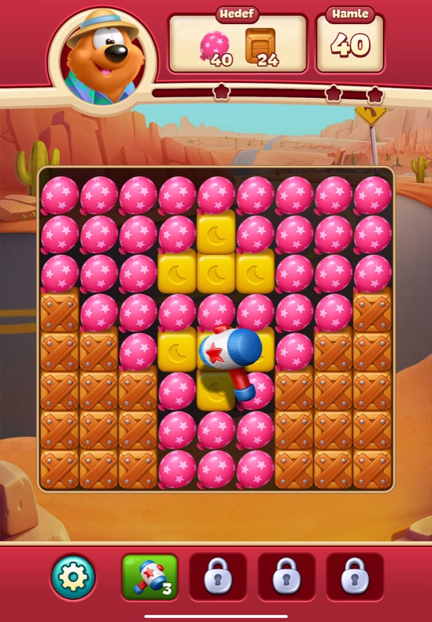
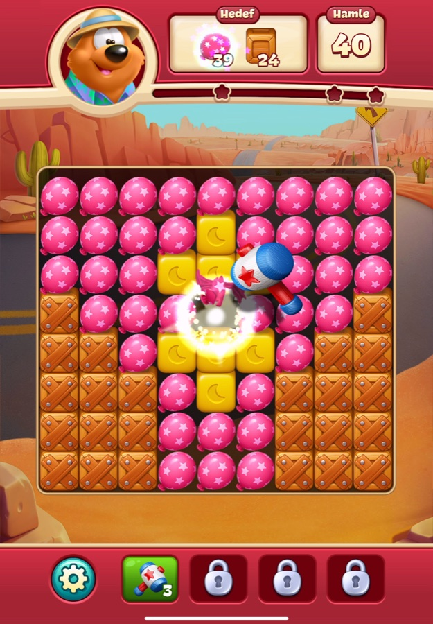
Araç çubuğundaki "Örs" ikonuna dokunulunca önce kısa bir açıklama kartı çıkıyor: "bir sütundaki her şeyi ortadan kaldırır." Oyuncu bir sütun seçtiğinde, ekranın altından gerçek bir örs objesi düşüp o sütuna çarpıyor, küpler tahta parçası gibi dağılıyor, toz bulutu kalkıyor; ardından sütun normal cascade akışıyla yeniden doluyor. Çekiç tek hücreyi hedeflerken, Örs doğrudan bütün bir sütunu temizliyor.
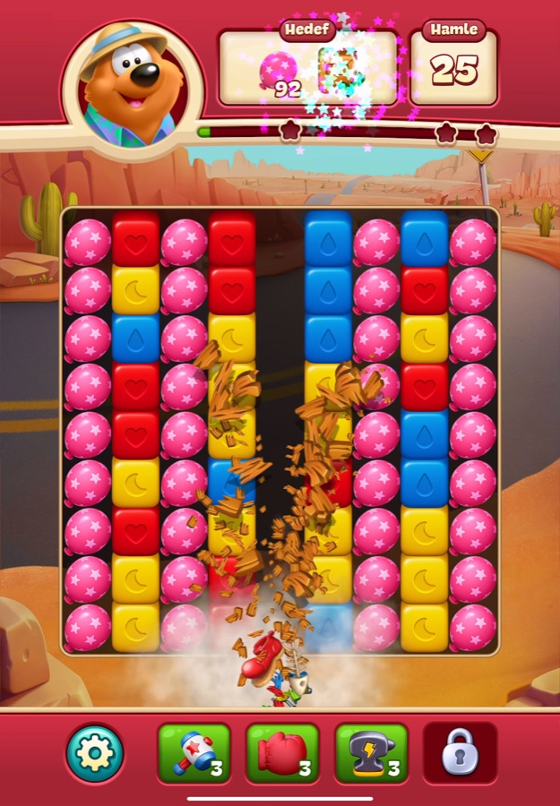
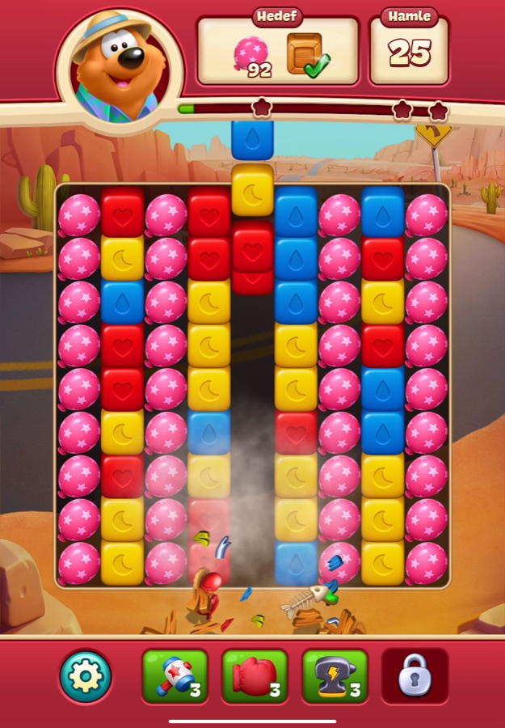
İlk kez açılınca ekrana bir tanıtım kartı düşüyor: "BOKS ELDİVENİ, bir sıradaki her şeyi ortadan kaldırır!", altında araç çubuğundaki simgeyi işaret eden bir ok. Örs'ün sütun mantığının satır karşılığı: eldiven ekranın kenarından girip seçilen satırı baştan sona yumruklayarak temizliyor, kırık kutu parçaları her yöne saçılıyor. Üç aracın üçü de (Çekiç/tek hücre, Örs/sütun, Boks Eldiveni/satır) aynı "geometrik temizlik" ailesinden, sadece kapsamları farklı.
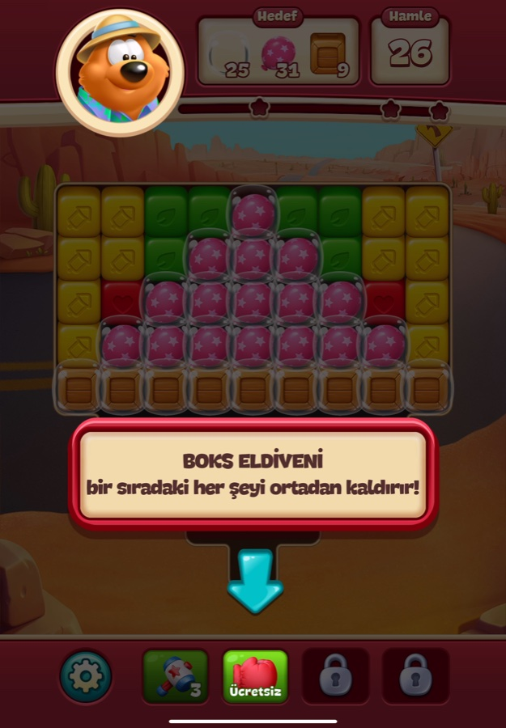
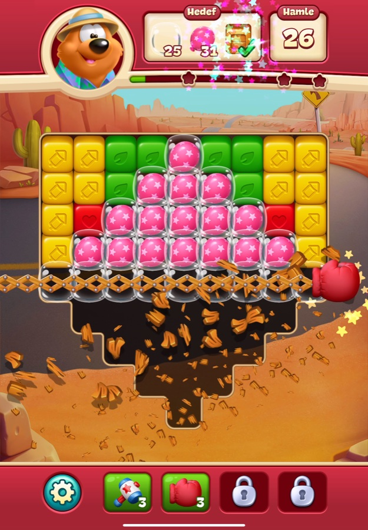
Zar aracının kendine ait bir aktivasyon animasyonu yok: oyuncu zar ikonuna, ardından hedef hücreye dokunuyor, hücre doğrudan normal bir eşleşmeymiş gibi işleniyor. Dört araç arasında kendine özgü görsel bir "imza" taşımayan tek araç.
Meta Ödül Ekranları: Şanslı Takviye ve Günlük Bonus
Board dışında, ana menüde çalışan iki zamanlı ödül sistemi bulundu; ikisi de Royal Match'te görmediğimiz bir dil kullanıyor.
Haritada belirli bir eşiğe yaklaşılınca ekranın ortasında ateş parçacıklarıyla çevrili bir "Şanslı Takviye" rozeti, yanında 15 dakikalık bir geri sayım beliriyor. Kısa süre sonra, aynı süreyi tekrar gösteren ve haritadaki ilgili ikonu okla işaret eden açıklayıcı bir modal açılıyor: "Aşamaları süre dolmadan tamamla ve bonus ödüller kazan!"
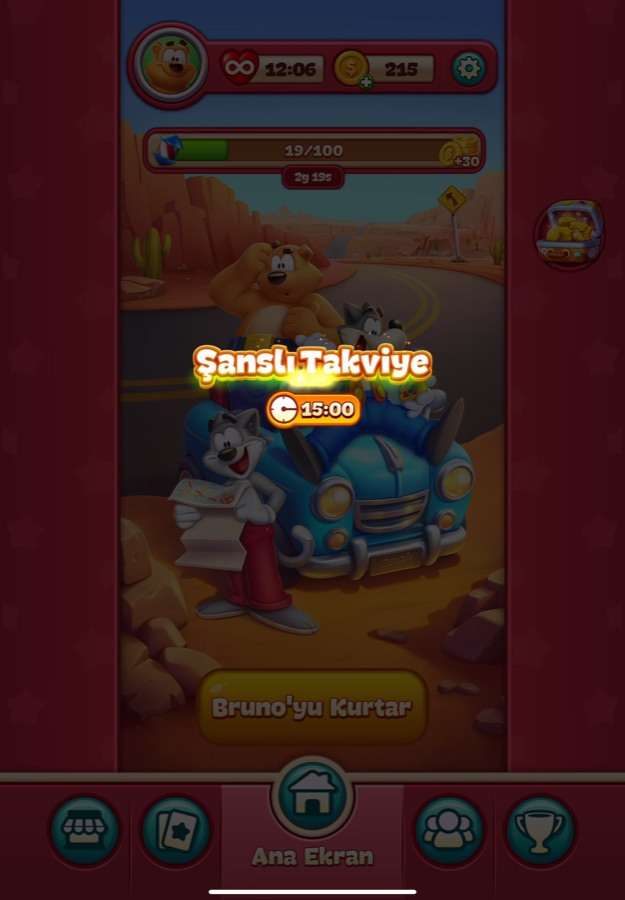
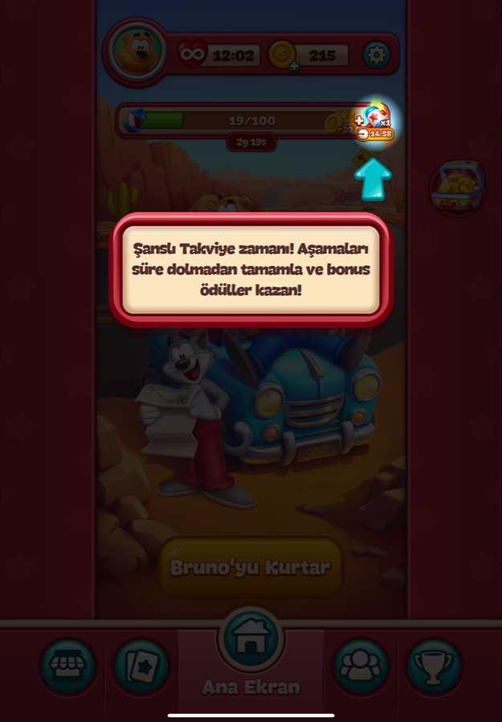
Ekran koyu mavi bir zemine geçiyor, tek bir kart alttan kayarak beliriyor, ardından sekiz kart daha art arda kayarak 3x3'lük bir düzene yerleşiyor. Son olarak "Kartını seç ve ödülünü al!" yazısı beliriyor. Royal Match'te bu satıra karşılık gelen bir ekran bu oturumda görülmedi.
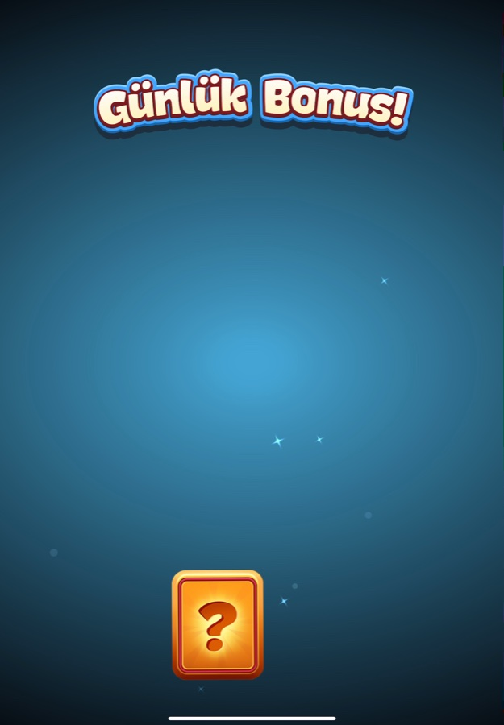
Çapraz Analiz
Animasyon bölümlerini aynı sırayla yazmamızın sebebi buydu: yan yana koyunca nerede aynı dili konuştukları, nerede bilinçli olarak ayrıştıkları netleşiyor.
| Boyut | Royal Match | Toon Blast |
|---|---|---|
| Cascade / kuyruk | Var, board hiç kilitlenmiyor | Yok, board hamle boyunca geçici kilitleniyor |
| Kazanma ekranı dili | 5 adımlı sekans: karartma, kurdele, harf harf logo, konfeti, havai fişek | Tek banner, board hiç kararmıyor, üstünden geçen bir katman |
| Statik başarısızlık ekranı | Kırık kalp + booster seçimi + Tekrar Dene | Kırık kalp + booster seçimi + Tekrar Dene (neredeyse birebir aynı) |
| Tap-to-skip | Var, ama ekranda bildirilmiyor, oyuncu kendi keşfediyor | Var, "Geçmek İçin Dokun" yazısıyla açıkça bildiriliyor |
| Boşta bekleme ipucu | Var (ikon parlayıp eşleşmeye hareket ediyor) | Yok |
| Ekran sarsıntısı | Sadece mini oyunlarda | Hiç yok |
| Araç çubuğu booster'ları | 4 tane: hücre, satır, sütun, karıştırma | 4 tane: hücre, satır, sütun, karıştırma (aynı ilerleme) |
| Ödülün HUD'a taşınması | İki ayrı para, iki ayrı animasyon (yıldız + altın) | Tek akış: rozet coinlere dönüşüp HUD'a uçuyor |